Yes, Bo Nix was the third-highest scorer of the week, and apparently, he was the rookie of the month in October, but please, can you stop asking about it so we can move on to this week’s power rankings? God, you’re so exhausting!
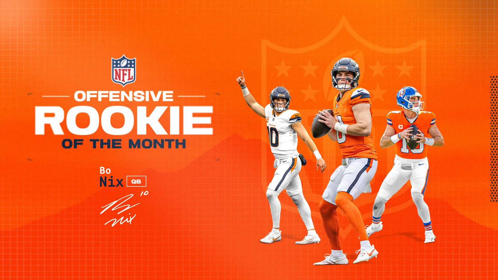
Matchup of the Week Won’t You Be My Nabers (6-2) vs. Mr. Turna 2-to-uh-4 (6-2) I mean shit, how could it not be the two teams tied for first? Do we know what Andy’s team name means? No. Do we want Seif to lose? Yes. We must do everything in our power to stop Matt and PJ. Do not forget this, you maggots.
What to watch for: * Mixon had a nice game, but the lack of receptions kept it in this atmosphere. * Ka’imi Fairbairn missed a FG! * Goff vs. Green Bay is spicy as you never know what you’ll get in a divisional rivalry game. * Lamar faces a stiff Denver D, but he is still Lamar, who will prevail? * Can Kamara get back on track for NO against the Saints, with Carr seemingly back? * Which Amon-Ra will we get? Lions are spreading it around a lot in the passing game.
Waiver Wire Wizards and Wieners Honestly, it was a pretty dull week on the wire. 3/5 of our Wednesday pickups were defenses, so I’m not even going to talk about it.
Survivor Pool - IT ALL COMES DOWN TO THIS! Out of all the fucking scumbags in this scumbag-ridden league, only two could be the scummiest! Only Andy and Neil have survived this far, one will emerge next week with a crisp $50 billy. Who will score the most this week!?!
📈 Week Nine Power Rankings 📈
1. Mr. Turna 2-to-uh-4 ⬆️
6-2, W3, PF: 1012.68, $0 FAAB
Dave is on a real hot streak, leaping him into a tie for the number one spot. Leading this squad, Lamar could have easily been the MVP so far - but flu season is upon us. This team also relies heavily on the Cardinals receiving game in McBride and Harrison - that last part scares me a bit, but it’s working now.
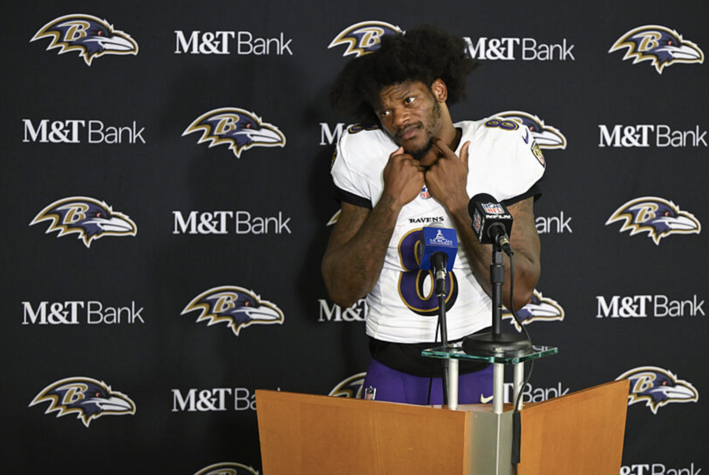
2. Won’t You Be My Nabers ↔️
6-2, W1, PF: 1088.18, $90 FAAB
Seif’s bankroll will pay off at some point, and that’s a huge advantage for a team that already is first in points. He’s got a high ceiling, and his entire bench would be starting on my team this week, lol. Plus, he’s got an ace of his sleeve with Jonathon Brooks waiting in the wings.
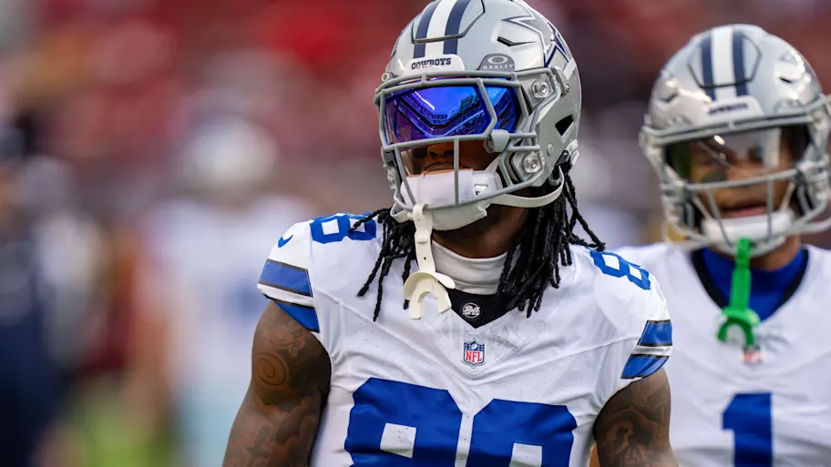
3. 8==D ⬇️⬇️
5-3, L1, PF: 1057.46, $16 FAAB
PJ went for the long play with the Evans add while losing immediate depth at WR. He now turns to Ridley to fill his WR2 spot this week… ballsy, but Ridley has averaged 10.6 targets a week for the last three and doesn’t have Levis missing him on most of those anymore.
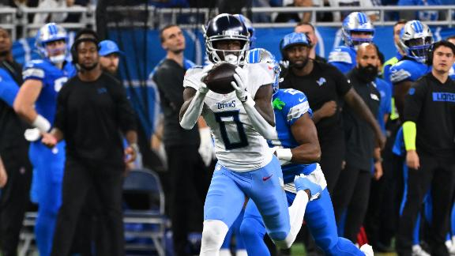
4. Josh Allen’s Fat Hog ⬆️⬆️⬆️
4-4, W1, PF 977.54, $52 FAAB
I already had Neil penciled in here, and then he got off to a quick start with Garrett Wilson’s signature performance and a good game from Dell. Once Collins is back, this WR room may be the deepest. If Stevenson can smooth the ups and downs, he, Conner, and Najee may be our league’s most low-key, stacked backfield.
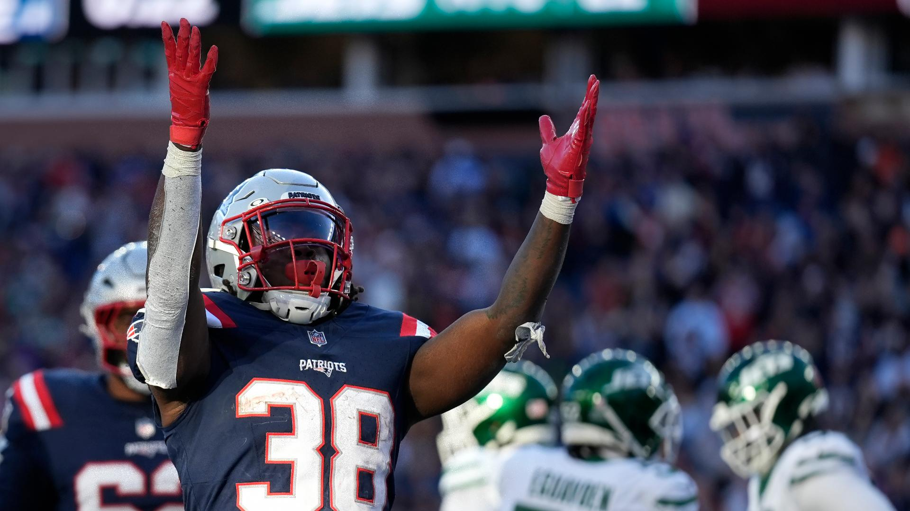
5. Sweet Brotha Numpsay ↔️
5-3, L1, 924.32, $2 FAAB
He wants respect, but he won’t get it. But let’s give him a little for being a tight end genius after I clowned on his Ravens. Pitts has emerged as one of the best in the league, while Andrews is right on his ass. To add to that, Kyren can’t stop scoring, though Barkley has had many vultured by Hurts (though he remains one of the best picks fo the draft.)
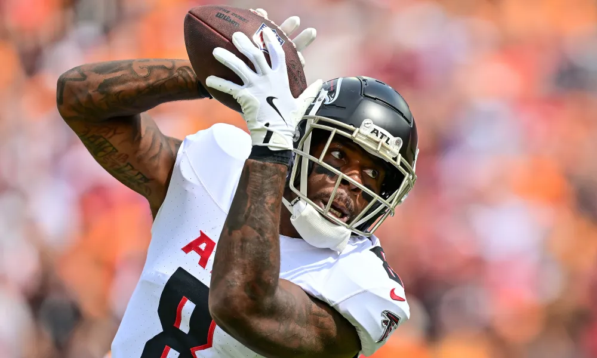
6. Swift Loves Kelce ⬇️⬇️
4-4, L1 , PF: 872.18, $30 FAAB
Tyreek is… almost… back. There are signs of life with the Dolphins and Kris has been getting by without Hill, that’s a big boost. It’s just at the right time as it seems that teams have figured out how to limit Jayden Reed. Kris’s team still hosts two of the league’s most consistent TD producers in Walker and Brian Robinson Jr., though Robinson has done less with his opportunities outside of the five-yard line.
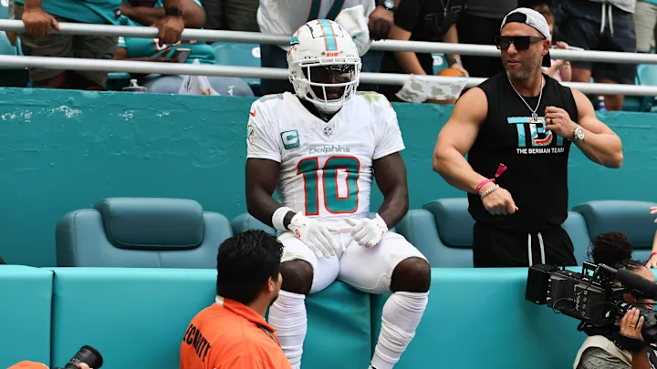
7. Jahmyr We Go Again ⬇️
5-3, L1, PF 986.68, $34 FAAB
I keep telling myself, “If I can get through this week, I’ll have a good chance,” but I’m starting to feel like sand is slipping through my fingers. I gambled on CMC, but will he even be himself next week? My receivers can’t stay healthy for more than a game at a time (re: Higgins, Kupp, Deebo). My lineup looks like shit going into this weekend - but you never know; sometimes that works out, lol.
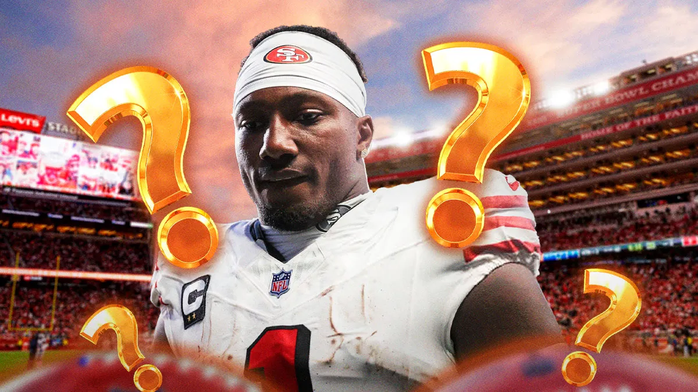
8. Griddy Griddy Bang Bang ↔️
3-5, W1, PF 905.90, $29 FAAB
Joel’s Jags gave it to me. I was egging them on all year, so it makes perfect sense. It sucks to see Puka come back and be so good, then immediately hurt, but glad to see that it’s hopefully not too serious. With Black Ops 6’s release, is it wise to start Kyler this week!? Well, it’s pretty smart, considering it’s just him vs. Mahomes on his bench.
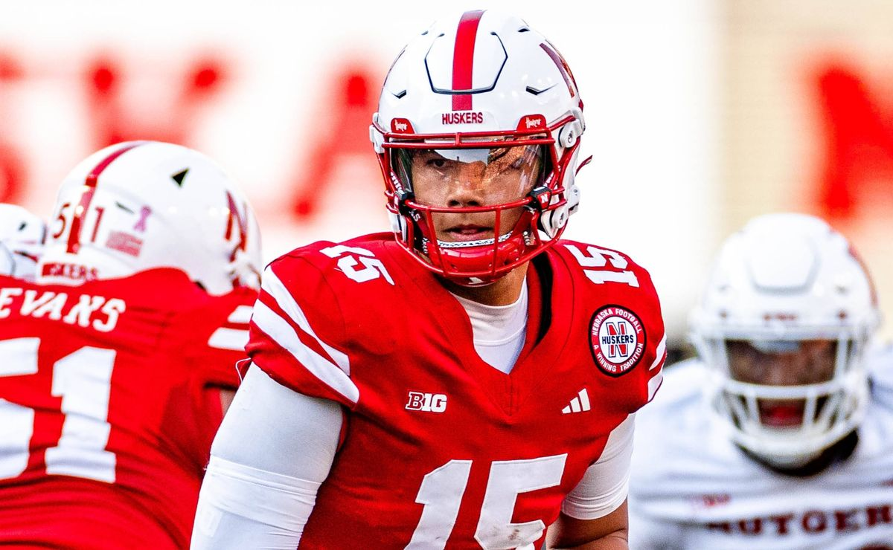
9. Achane’s Cocaine Train ↔️
2-6, W1, PF 919.44, $11 FAAB
Chris is a birthday boy ready to get a treat in a soft matchup against me. Expect to see him rising next week. Take a look at this team after its reconstruction over the last few weeks. It looks solid and balanced. Could a late-season run be in the works? I mean, it’s insane that Bo Nix is a backup—deep squad.
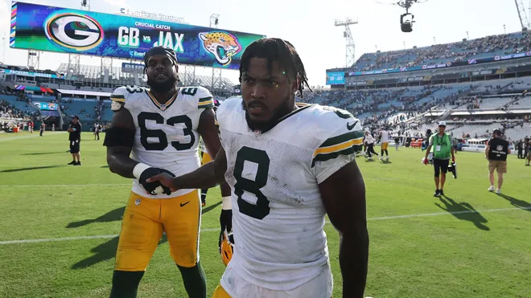
10. Above and Bijan ↔️
0-8, L8, PF 823.72, $52 FAAB
Bro, get help. Throw a dart or something.
img missing
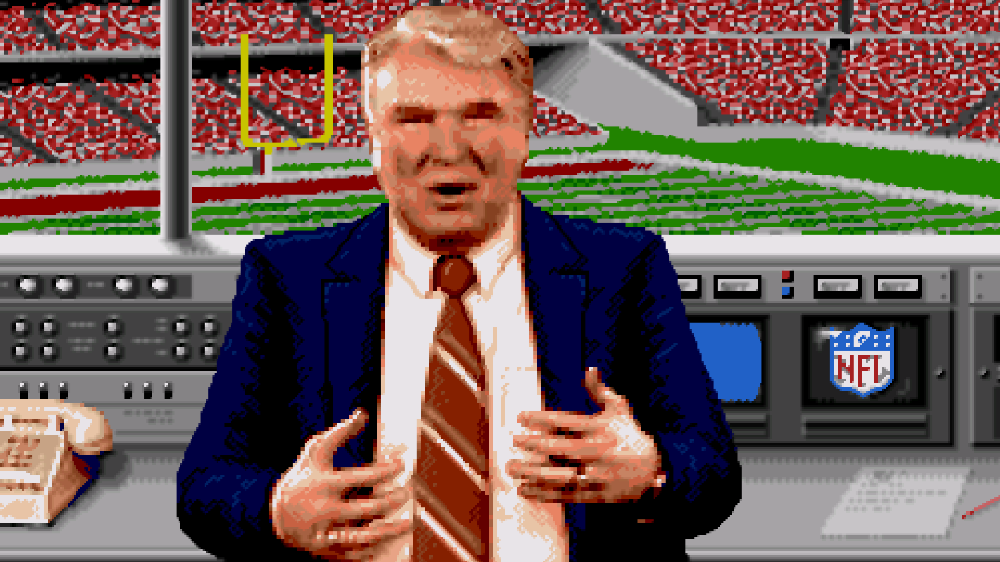
“The only yardstick for success our society has is being a champion. No one remembers anything else.”
- John Madden
Good luck to everyone besides Chris! 🙅♂️🎂🙅♂️